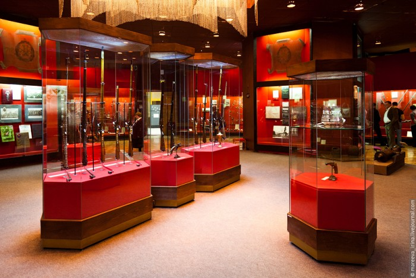

Название мероприятия
Какое-то описание
Приехали в Тулу?
Узнай, где выгоднее остановиться, куда
сходить и что посмотреть
Самая главная историческая веха — героическая оборона Тулы в годы Великой Отечественной Войны. Этот город один из немногих, защитники которого отбили все атаки фашистов и остались непокоренными. За мужество и героизм 7 декабря 1976 года Туле было присвоено звание «Город-герой».
Визитная карточка города и самый популярный сувенир среди туристов, к тому же съедобный. Но мало просто купить и попробовать его, гораздо интереснее познакомиться с историей создания, посетив местный музей и мастер-класс по приготовлению и росписи пряников. После можно насладиться чаепитием с вкусной и красивой выпечкой.
 В 1595 году Царским указом в Туле была учреждена Кузнецкая слобода (современное Заречье). Память о ней сохранилась до наших дней названиями улиц: Оружейная, Дульная, Курковая, Ствольная, Арсенальная. Оружейники слободы стали прообразами мастеров из сказа «Левша» Н.С. Лескова. С 1704 года Указом Петра I на реке Тулице купцу и промышленнику Никите Демидову было предписано плавить железо и соблюдать оружейное дело. В память о славных делах этой фамилии на территории Кузнецкой слободы открыт историко-мемориальный комплекс «Некрополь Демидовых». В 1712 году еще одним указом Петра I был основан Императорский казенный Тульский оружейный завод. Завод и сейчас занимает свою историческую территорию на острове, образованным рекой Упой и обводным каналом. В честь 200-летия завода и в память о Петре I в 1912 году Императору был поставлен памятник, выполненный известным скульптором Р.Р. Бахом.
Именно здесь писатель родился и провел более 50 лет. А также написал такие известные произведения, как «Война и мир» и «Анна Каренина». В доме сохранилась обстановка последнего года жизни писателя. Все личные вещи, картины и книги — подлинные, они принадлежали Толстому и его семье. Прикоснуться к ним не получится, но полюбоваться и вдохновиться атмосферой ― пожалуйста. Территория усадьбы впечатляет своими размерами и буквально утопает в зелени: от ворот въезда и до самого дома простирается березовая аллея, неподалеку возвышаются вековые дубы, к которым так и хочется прильнуть спиной и ощутить эту многолетнюю мощь. А еще здесь расположена конюшня, поэтому можно совместить приятное с полезным и покататься на лошадях.
Прямо как в детстве, но только не в самодельном, а со всеми удобствами и камином внутри. Отличный вариант для тех, кто хочет пробудить своего внутреннего ребенка. Кроме того, днем можно устроить велопрогулку по проселочным дорогам, полетать на параплане, посетить усадьбу Аксиньино, а вечером расслабиться в бассейне с гидромассажем. Весьма оригинальный вариант загородного досуга.
Согласно местным преданиям, в подземных кельях в старину спасались монахи. Они скрывались от преследований и проводили богослужения. Несмотря на то что следов алтарей или религиозных знаков тут не нашли, это место называют пещерным монастырем. Происхождение подземных келий до сих пор точно неизвестно, но зрелище впечатляет! Однако стоит быть максимально осторожным при посещении ― в каменных лабиринтах легко заблудиться.
Едва переступив порог, можно попасть в прошлое. Внутри весьма аутентично: аптекарская посуда, весы, книги, инструменты врача, бланки рецептов, фотографии дореволюционных интерьеров, упаковка лекарств XIX века и множество диковинных штук вроде зуба волка. В музее проводятся экскурсии и мастер-классы. Можно узнать, как создают духи и одеколоны, а заодно научиться составлять парфюмерные композиции на основе натуральных масел. «Старая тульская аптека» сохраняет обстановку и антураж провинциальной аптекарской старины минувших дней, раскрывая их посетителю.
Ближайшие мероприятия
Какое-то описание
Какое-то описание
Какое-то описание